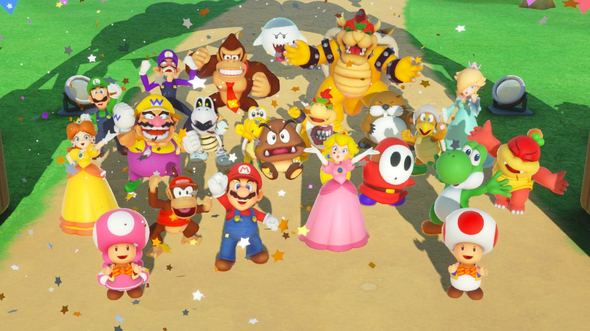

About Mario
Mario is a psychotic midget who bounces on other's heads to obliterate their lives. His main objective is to save Princess Peach. However, this is not exactly the case, as he receives satisfaction from decimating other life forms. Simply he finds pleasure from committing acts of homicide and genocide. Overall, Mario is a sincere heroic character who is centered around saving people in need, and continues to do so regardless of how difficult the obstacles may be.
Mario and His Friends
Mario's Characteristics
- He has a massive nose
- He kills for his own pleasure
- He has always been an evil being
Mario's Friends
Mario has quite a number of friends who are sincere (unlike him). His best friend would most obviously be Bowser, because both have to fight each other on an endless time span. So, it would make sense that they've become great friends through their uncountable vicious conflicts. Click on the links below to read more about them: